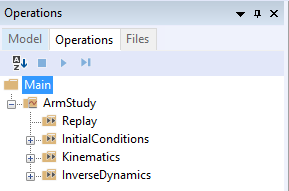
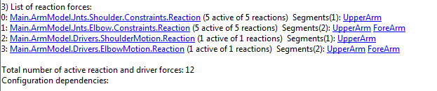
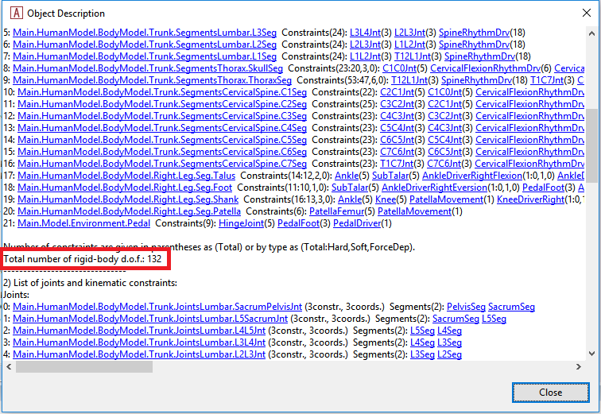

Lesson 3: Making Ends Meet¶
So far we have accomplished to define an environment model with a simple pedal and a human model containing the trunk and the right leg. What the application is still missing is specifications of how the different elements are connected and how the model moves. With kinematics, it is usually a good idea, to begin with, an inventory of degrees of freedom (DOFs) in the model.
Degrees of freedom overview¶
The pedal is simple: It is hinged to the global reference frame and therefore just has just one movement capability, namely a rotation about the hinge. The human model is more complicated. It is disconnected from everything and is, therefore, floating around in space. Furthermore, it has a number of internal degrees of freedom that must be controlled: Three rotations between the pelvis and the thorax segments, three rotations in the hip, one rotation in the knee, and two rotations in the ankle. With the 9 DOFs of the entire body model in space and the single DOF of the pedal, this adds up to 16 DOFs. In other words, we need 16 constraints before the model is kinematically determinate.
This is what we plan to do:
- The pelvis will be fixed completely at a point corresponding to the contact to a seat. This will do away with 6 DOFs leaving us with 10 more to specify.
- The 3 rotations between the trunk and the thorax segments will be specified by a driver to a constant position. This leaves us with 7 more constraints to specify.
- The foot will be connected to the pedal by a spherical joint having 3 constraints. This leaves us with 4 more constraints to specify.
- The ankle angle will be presumed fixed by two constraints. This leaves 2 DOFs to be constrained.
- The lateral position of the knee will be specified by a driver. This leaves a single degree of freedom in the system.
- Finally, we are going to drive the pedal angle. With the aforementioned constraints, this will allow us to specify the posture of the entire system by this single driver.
At the moment you don’t need to worry about this process of making constraints too much. From AMMR V1.6, this human model includes so-called ‘default drivers’ which can control the posture of human model using the joint angle values and velocities of the Mannequin.any file in your model. But because these default drivers are defined as ‘soft’ constraints by default, you can just add your own drivers on top of those drivers. After defining all your own drivers, you can deactivate the default drivers using a corresponding BM statement.
Fixing the pelvis to the global reference frame¶
We previously joined the pedal to the origin of the global reference frame. This means that the ‘seat’ to which we shall fix the pelvis must be displaced a suitable distance from the origin. In the Environment.any file, add the following to the definition of the GlobalReferenceFrame:
AnyFixedRefFrame GlobalRef = {
AnyRefNode Hpoint = {
sRel = {-0.7, 0.5, 0};
};
}; // Global reference frame
The name Hpoint is a term used in the seating industry to characterize the position of the pelvis in a seat. Here we shall simply attach the pelvis to this point by means of a rigid connection.
All such specifications are traditionally put into a folder called ModelEnvironmentConnection, and for historical reasons, it is placed in an include file called JointsAndDrivers.any. Let’s open this file by double-clicking of the following line in the main file:
...
#include "Model\JointsAndDrivers.any"
...
Then you can see the following structure inside:
AnyFolder Joints =
{
};
AnyFolder Drivers =
{
};
Here let’s prepare an AnyStdJoint for the fixation of pelvis:
AnyFolder Joints =
{
AnyStdJoint SeatPelvis =
{
AnyRefFrame& Seat = ;
AnyRefFrame& Pelvis = ;
};
};
The local pointer variables &Seat and &Pelvis need something to point to. The best way of locating the necessary points is to use the object tree at the left-hand side of the editor window. Place your cursor in the editor window on the &Seat line just before the final semicolon. Then expand the three in the left-hand side of the window through Model, Environment, GlobalRef to find the Hpoint that we defined previously. Right-click Hpoint and choose ‘Insert Object Name’. The full name of the Hpoint is inserted at the position of the cursor.
We must repeat the procedure for the Pelvis. Place the cursor on the &Pelvis line just before the semicolon and subsequently expand the object tree through HumanModel, BodyModel, Trunk, SegmentsLumbar. Inside the lumbar segments folder, you will find the PelvisSeg. Right-click and insert the object name. You should now have the following:
AnyFolder Joints =
{
AnyStdJoint SeatPelvis =
{
AnyRefFrame& Seat = Main.Model.Environment.GlobalRef.Hpoint;
AnyRefFrame& Pelvis = Main.HumanModel.BodyModel.Trunk.SegmentsLumbar.PelvisSeg;
};
};
Save the file and hit F7 to reload the model. The model still loads in the same position as before.
The initial positions are controlled by the mannequin file. Open it up by double-clicking the following line:
...
#path BM_MANNEQUIN_FILE "Model\Mannequin.any"
...
AnyFolder Mannequin = {
AnyFolder Posture = {
//This controls the position of the pelvis wrt. to the global reference frame
AnyVar PelvisPosX = -0.7;
AnyVar PelvisPosY = 0.5;
AnyVar PelvisPosZ = 0;
...
What we have done here is to specify the load-time position of the pelvis to the place where we have the seat. After reload you should be able to see in the model view that the body model has moved to a new position. It is also a good idea to specify the initial joint angles so that the foot comes closer to the pedal. This can be done further down in the Mannequin file:
AnyFolder Right = {
//Arm
AnyVar SternoClavicularProtraction=-23; //This value is not used for initial position
AnyVar SternoClavicularElevation=11.5; //This value is not used for initial position
AnyVar SternoClavicularAxialRotation=-20; //This value is not used for initial position
AnyVar GlenohumeralFlexion =-0;
AnyVar GlenohumeralAbduction = 10;
AnyVar GlenohumeralExternalRotation = 0;
AnyVar ElbowFlexion = 0.01;
AnyVar ElbowPronation = -20.0;
AnyVar WristFlexion =0;
AnyVar WristAbduction =0;
//Leg
AnyVar HipFlexion = 110.0;
AnyVar HipAbduction = 5.0;
AnyVar HipExternalRotation = 0.0;
AnyVar KneeFlexion = 100.0;
AnyVar AnklePlantarFlexion =0.0;
AnyVar SubTalarEversion =0.0;
...
On reload, you will see that the body now loads in pretty much the desired position. Notice that this is only to bring the body close to where it will eventually be. It is not necessary to align the model exactly with the pedal. The kinematic constraints will take care of this once they are properly defined.
Fix the trunk position¶
In this model, the trunk does not play any kinematic role. Its purpose is only to include the psoas muscles connected to the leg. So we should simply set it to a fix position. The trunk has three free rotations, flexion, lateral bending and axial rotation plus the rotation of the skull that we will fix to zero degrees. This can be done by a so-called simple driver. In the JointsAndDrivers file we can see the ‘Driver’s folder below the Joints folder:
AnyFolder Joints =
{
AnyStdJoint SeatPelvis =
{
AnyRefFrame& Seat = Main.Model.Environment.GlobalRef.Hpoint;
AnyRefFrame& Pelvis = Main.HumanModel.BodyModel.Trunk.SegmentsLumbar.PelvisSeg;
};
};
AnyFolder Drivers =
{
};
We then insert two simple drivers into the Drivers folder:
AnyFolder Drivers =
{
AnyKinEqSimpleDriver PelvisThoraxDriver =
{
AnyKinMeasure& ref0 = ...HumanModel.BodyModel.Interface.Trunk.PelvisThoraxExtension;
AnyKinMeasure& ref1 = ...HumanModel.BodyModel.Interface.Trunk.PelvisThoraxLateralBending;
AnyKinMeasure& ref2 = ...HumanModel.BodyModel.Interface.Trunk.PelvisThoraxRotation;
DriverPos = pi/180*{0,0,0};
DriverVel = pi/180*{0,0,0};
};
AnyKinEqSimpleDriver NeckJntDriver =
{
AnyKinMeasure& ref0 = ...HumanModel.BodyModel.Interface.Trunk.NeckJoint;
DriverPos = pi/180*{0};
DriverVel = pi/180*{0};
};
};
Most of this came about the same way as we have done previously: The definition of the AnyKinEqSimpleDriver (and indeed its complex name) came from the Object Inserter in the Class Tree at the left-hand side of the editor window. The complete name of the thorax and neck rotations was inserted from the object tree. The joints are going to be static, and in their neutral position, so the DriverVel and DriverPos are simply zero.
Connecting the foot to the pedal¶
The foot will be connected to the pedal by a spherical joint. This is defined inside the JointsAndDrivers.any file in the following way:
AnyFolder Joints =
{
AnyStdJoint SeatPelvis =
{
AnyRefFrame& Seat = Main.Model.Environment.GlobalRef.Hpoint;
AnyRefFrame& Pelvis = Main.HumanModel.BodyModel.Trunk.SegmentsLumbar.PelvisSeg;
};
AnySphericalJoint PedalFoot =
{
AnyRefFrame& Pedal = Main.Model.Environment.Pedal.FootNode;
AnyRefFrame& Foot = Main.HumanModel.BodyModel.Right.Leg.Seg.Foot.MetatarsalJoint2Node;
};
};
We have cheated just a little. It is possible to define new nodes on the foot for attachment to a specific place, but we have taken the cheap-and-dirty solution of picking an existing point close to where we presume the contact with the pedal will be. The MetatarsalJoint2Node is a good approximation.
Setting the ankle angle¶
In the Ankle of this human model, there are 2 degrees of freedom: AnklePlantarFlexion and SubTarEversoin. We wish to constrain these degrees of freedom to predefined values as zero. This can be done by the simple driver. We shall introduce the simple driver into the Drivers folder:
AnyFolder Drivers =
{
...
AnyKinEqSimpleDriver NeckJntDriver =
{
AnyKinMeasure& ref0 = ...HumanModel.BodyModel.Interface.Trunk.NeckJoint;
DriverPos = pi/180*{0};
DriverVel = pi/180*{0};
};
AnyKinEqSimpleDriver AnkleDriver =
{
AnyKinMeasure& ref0 = ...HumanModel.BodyModel.Interface.Right.AnklePlantarFlexion;
AnyKinMeasure& ref1 = ...HumanModel.BodyModel.Interface.Right.SubTalarEversion;
DriverPos = pi/180*{0, 0};
DriverVel = pi/180*{0, 0};
};
};
The model should load again with no significant difference.
Fix the lateral position of the knee¶
Imagine your pelvis on a seat and your foot resting on a point like the model is right now. You can still move your knee sideways either medially or laterally rotating the leg about an axis through the foot contact point and the hip joint. We must constrain this movement, and the easiest way to do it is by fixing the knee laterally.
We shall do this by another simple driver in conjunction with a linear measure which is so-called as AnyKinLinear class object. Let us add another driver to the Drivers folder:
AnyFolder Drivers =
{
...
AnyKinEqSimpleDriver AnkleDriver =
{
AnyKinMeasure& ref0 = ...HumanModel.BodyModel.Interface.Right.AnklePlantarFlexion;
AnyKinMeasure& ref1 = ...HumanModel.BodyModel.Interface.Right.SubTalarEversion;
DriverPos = pi/180*{0, 0};
DriverVel = pi/180*{0, 0};
};
AnyKinEqSimpleDriver KneeDriver =
{
AnyKinLinear lin =
{
AnyRefFrame& ref0 = Main.Model.Environment.GlobalRef;
AnyRefFrame& ref1 = Main.HumanModel.BodyModel.Right.Leg.Seg.Thigh.KneeJoint;
Ref = 0;
};
MeasureOrganizer = {2};
DriverPos = {0};
DriverVel = {0};
};
};
The AnyKinLinear class is really a 3D vector between the two reference frames which it refers to, i.e., in this case, the position of the knee with respect to the global reference frame. However, we only wish to drive one of the coordinates of this vector, namely the lateral coordinate. This is the z coordinate, which in an AnyScript model has the index number as two because numbering index begins from 0. To drive only this one coordinate, we should specify the MeasureOrganizer inside the AnyKinEqSimpleDriver object, and this MeasureOrganizer can configure which components of the related kinematic measures can be controlled by its kinematic drivers. So in this case, the driver will neglect the x and y coordinates of the vector returned by the linear measure. You should be able to load the model again, but there is no visible difference.
Drive the pedal¶
The final step is to drive the movement of the pedal. It is hinged to the origin of the coordinate system, and we shall add a driver to the joint angle pretty much like we did with the ankle and the knee.
AnyFolder Drivers =
{
...
AnyKinEqSimpleDriver KneeDriver =
{
AnyKinLinear lin =
{
AnyRefFrame& ref0 = Main.Model.Environment.GlobalRef;
AnyRefFrame& ref1 = Main.HumanModel.BodyModel.Right.Leg.Seg.Thigh.KneeJoint;
Ref = 0;
};
MeasureOrganizer = {2};
DriverPos = {0};
DriverVel = {0};
//Reaction.Type = {Off};
};
AnyKinEqSimpleDriver PedalDriver =
{
AnyKinMeasure &ref0 = Main.Model.Environment.HingeJoint;
DriverPos = pi/180*{100};
DriverVel = pi/180*{45};
Reaction.Type = {Off};
};
};
This puts the pedal in an initial 100-degree angle compared to vertical. It also specifies a movement with an angular velocity of 45 degrees per second, but let’s postpone the investigation of that for later.
For now, hit F7 again to reload the model. Notice that the system no longer complains about the model being kinematically indeterminate.
Running kinematics¶
Select the ‘Main.Study.Kinematics’ and run this operation to see how your model works kinematically.

Doing so will show you the movement of the entire system as the pedal is rotating.

Check if model is kinematic determined?¶
Finally, you will check the number of DOFs and the number of kinematic constraints from the “Object Description” of the AnyBodyStudy object. You can find the “Object Description” of your AnyBodyStudy class object in the Model Tree of your model like this:

Then you see the Object Description dialog will open.

This indicates that the total number of DOFs(degrees of freedom) in your model is 90. It makes sense because there are 15 segments in your model and each segment has 6 DOFs.
If you scroll down this dialog a little bit more, then you can see the following section:
The last message in the above screenshot lets us know that there are 106 constraints from the joints and the drivers in the model.
In general, the total number of DOFs in the model should be exactly as same as the total number of kinematic constraints in the model. But at the moment, the number of kinematic constraints is larger than that of DOFs. In this kind of situation, the kinematics of the model may not be determined uniquely because there are more equations to be solved than the number of unknowns in the system. This may frequently happen if the user may not consider this concept of the DOFs and the constraints.
But you should know why there are more constraints than you have defined and how AnyBody could solve the kinematics of the model even in this situation. In the “HumanModel” folder there is a subfolder of which name is ‘DefaultMannequinDrivers’. In that folder, there are some default drivers which can control the posture of the human model based on the values in the Mannequin.any file.
The reason why these default drivers exist is that sometimes the user may have some difficulties in finding which human joints should be driven or what kinds of constraints should be defined for the human model. In order to provide a more convenient way of modeling, these default drivers of human model can help users even if they may miss some necessary drivers to run the kinematics perfectly. And because these default drivers are defined as “Soft” constraints, the kinematics of the model can be solved with the other normal “Hard” type constraints. “Soft” constraint means that it can be compromised with other Soft and Hard Constraints.
Because you could define all necessary “Hard” constraints to run the kinematics, let us find the way how to remove these default drivers from your model. You can just add one more BM statement in the main file to control the default drivers of the human model like this:
//-->BM statements
// Excluding the muscles in the trunk segments
#define BM_TRUNK_MUSCLES _MUSCLES_NONE_
// Excluding the left arm segments
#define BM_ARM_LEFT OFF
// Excluding the right arm segments
#define BM_ARM_RIGHT OFF
// Excluding the left leg segments
#define BM_LEG_LEFT OFF
// Using the right leg as 'TLEM' model
#define BM_LEG_RIGHT _LEG_MODEL_TLEM1_
// Excluding the muscles in the right leg segments
#define BM_LEG_MUSCLES_RIGHT _MUSCLES_NONE_
// Excluding the default drivers for the human model
#define BM_MANNEQUIN_DRIVER_DEFAULT OFF
//<--
Save the main file and press F7 button to reload the model. And try to open the Object Description dialog of “Study” object in the Model Tree.
You see that now the total number of constraints has been changed to 90 and this is exactly as same as the total number of DOFs. Of course, you can still run the kinematics of your model.
See also
Next lesson: Now that the kinematics is in order let us move on to the kinetic analysis in Lesson 4 and see what the model is good for.